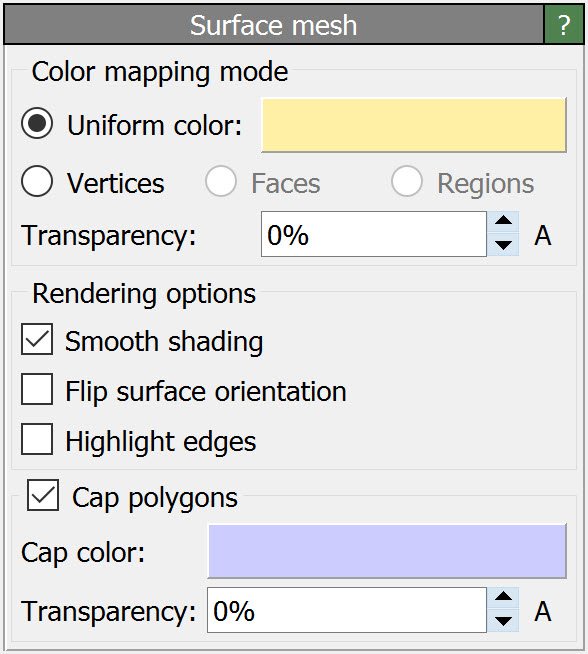
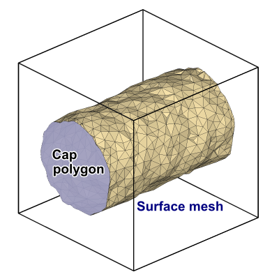

Surface mesh
{kind=link}
This visual element controls the appearance of triangulated surface meshes, which are produced by the Construct surface mesh, Create isosurface, Dislocation analysis (DXA) or other modifiers in OVITO.
{kind=link}
Surfaces meshes are typically closed, two-dimensional manifolds embedded in a simulation cell. If periodic boundary conditions are employed, the surface mesh itself can be periodic. For visualization purposes, such a periodic mesh is first converted to a non-periodic representation by truncating it at the simulation cell boundaries. OVITO has an option to render so called Cap polygons to fill the holes that would otherwise appear at the simulation cell boundaries where the surface is clipped.
Coloring mapping mode
Unless the surface already has explicit color information associated with it, you have the choice between a simple uniform coloring mode and a pseudo-coloring mode, which lets you visualize some local property associated with the vertices, faces or regions of the mesh.
Parameters
- Transparency
The degree of transparency of the surface.
- Smooth shading
Turns on interpolation of face normals to make the polygonal mesh appear smooth, not faceted.
- Flip surface orientation
Reverses the orientation sense of the surface and generates cap polygons on the outside, not inside of the enclosed volume.
- Clip at cell boundaries
If the surface extends beyond the boundaries of a non-periodic simulation cell, this option limits the display to those sections of the surface mesh that are located inside the simulation box. Note that this option does not apply to simulation cells with periodic boundary conditions. Along periodic directions, the surface mesh always gets wrapped back into the cell during rendering.
- Highlight edges
Activates the rendering of wireframe lines along the edges of the mesh facets.
- Highlight edges
Activates the rendering of wireframe lines along the edges of the mesh facets.
- Cap polygons
This option enables the display of caps where the surface manifold intersects with the simulation cell’s boundaries. It is only available for surfaces meshes that are closed, i.e., which represent a two-dimensional manifold that divides space into “interior” and “exterior” regions.
See also
ovito.vis.SurfaceMeshVis (Python API)